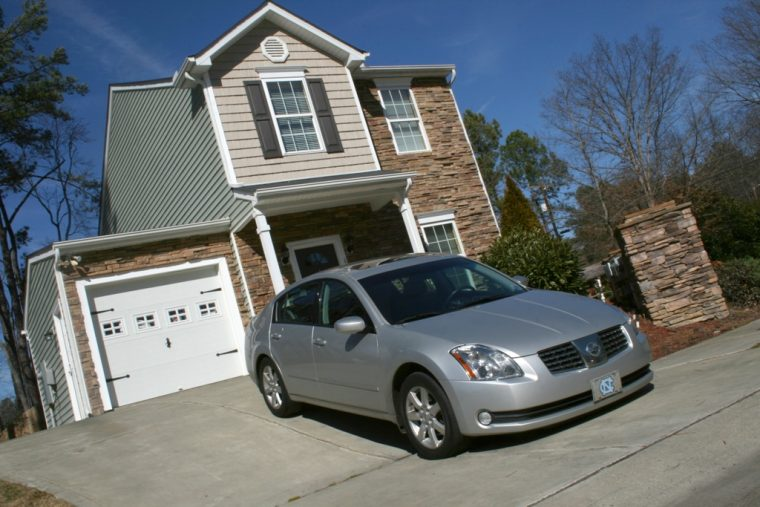

You wake up in the morning and realize your going to be late to the NASCAR race, if you leave now you know the race will have started and you would miss some of the race, what do you do?
| You stay home and watch the race |  You grab your tickets and leave now |